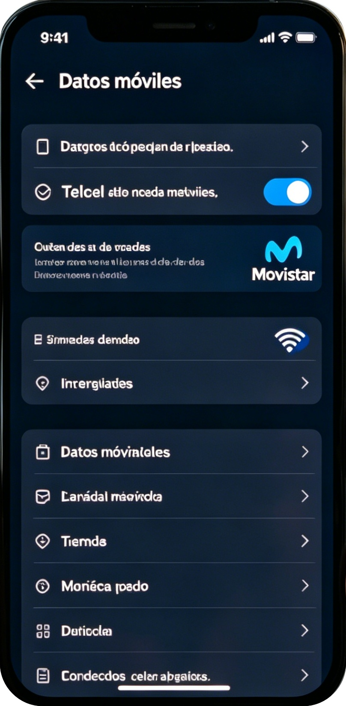
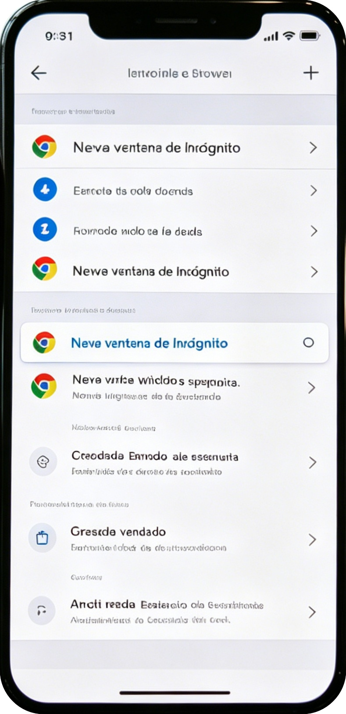
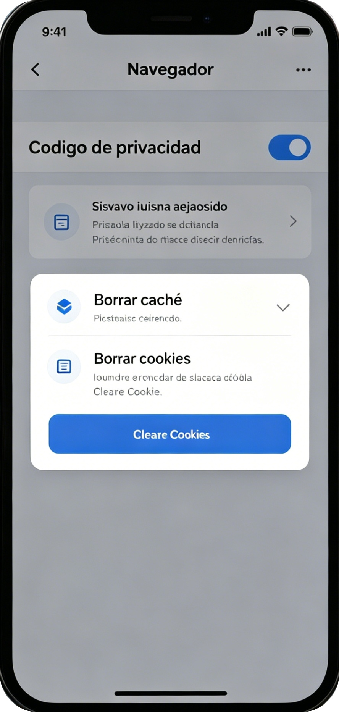

El WiFi es la causa principal de lentitud.

Así evitas bloqueos y caché antiguo.

Esto soluciona el 90% de fallos de carga.

Me funcionó al cambiar a datos móviles.
💬 Comentarios
Me funcionó al cambiar a datos móviles.